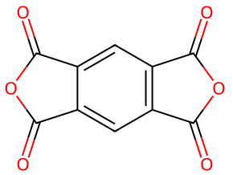

平成23年度 問14 高分子化学
次のA～Eの試薬を用いた重縮合・重付加のうち、ポリ尿素が得られるものとポリイミドが得られるものの組合せはどれか。
選択肢
- A、C
- A、E
- B、D
- B、E
- C、D
①
ヘキサメチレンジアミンとアジピン酸
②
ヘキサメチレンジアミンとヘキサメチレンジイソシアナート
③
テトラメチレングリコールとヘキサメチレンジイソシアナート
④
p -フェニレンジアミンと無水ピロメリット酸
⑤
p -フェニレンジアミンとテレフタル酸ジクロリド
正答
③ テトラメチレングリコールとヘキサメチレンジイソシアナート
ポリ尿素は尿素結合（-NH-CO-NH-）を持つ化合物で、ジアミンとジイソシアネートとの反応により得られます。
ポリイミドはイミド結合（-CO-NR-CO-）を持つ化合物で、ジアミン＋カルボン酸無水物との反応により得られます。

Aはポリアミド（ナイロン66）が生成します。
Cはポリウレタンが生成します。
Eは芳香族ポリアミド（アラミド繊維）が生成します。